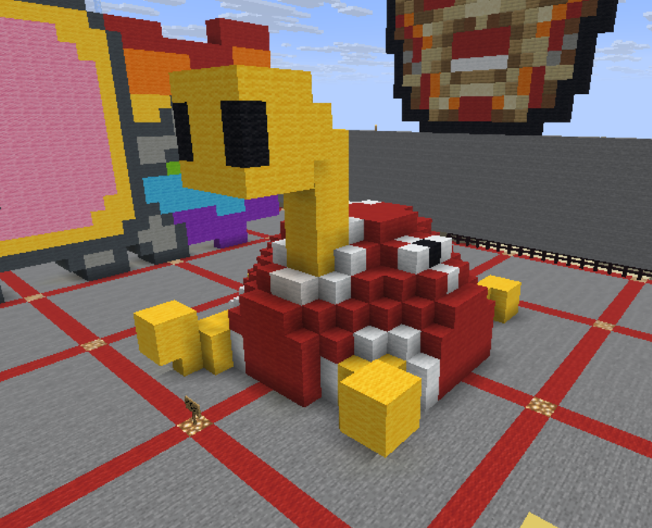

We got to use Minecraft as a canvas for sculpture since the game has a virtual space with relatively similar properties to the real world.
I decided to make a sculpture of my favorite Pokémon, Shuckle. It has significance in Pokémon culture for its unique stats, gimmicks in PVP, and its cute vibe. Shuckle has the highest defense and special defense base stats for any non-mega Pokémon, with both defensive stats being at 230. Shuckle makes a decent defensive hazard-setter and staller in PVP. But with different moves/abilities that swap and boost its base stats, it can run a mix of very gimmicky offensive and defensive builds. For these reasons, Shuckle has gained its cultural significance in the Pokémon community.